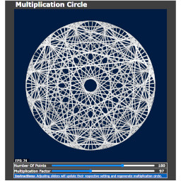
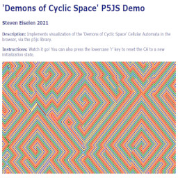
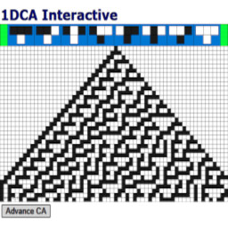
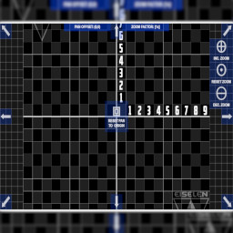

| Name/Description | Screengrab |
|---|
[Conway's] Game Of Life (in P5JS)
- Type[s]: (Cellular) Automata, (Basic) AI, Procedural Content Generation
- Description: Interactive visualization and simulation of the classic Cellular Automata. Supports keypresses to toggle 'wrap-around' room mode, reset room to random values, pausing advancement to manually set cells, and more.
|
 |
Game Of Life P5JS - Version 2
- Type[s]: (Cellular) Automata, (Basic) AI, Procedural Content Generation
- Description: Interactive visualization and simulation of the classic Cellular Automata. Updated version of my original above: featuring much larger gridworld (in both pixels and rows/columns) alongside overall code improvements.
|
|
"Fun With Voronoi" Diagrams!
- Type[s]: Computational Geometry, Spatial Partitioning, Nearest Neighbor, Site Loc.
- Description: Interactive visualization of Voronoi Diagram; such that points can be added/moved/removed via mouse with 'live' VD update thereof. Also features keypress triggered implementation of 'Min. Bound Rectangular Smoothing'. Uses an external implementation of Fortune's Algorithm.
|
|
PR / Destruct. Terrain Quadtree
- Type[s]: Computational Geometry, Data Structure for 2D Spatial Partitioning and/or Destructible Terrain
- Description: Interactive demo of two common Quadtree applications: a Point-Region (PR) Quadtree mode used for Spatial Partitioning (i.e. visibility / collision detection); and another mode which realizes 2D Destructible Terrain.
|
|
Spatial Partitioning Viz/Compare
- Type[s]: Spatial Partitioning, Collision Detection, Comparing SP Techniques
- Description: Computes and Displays 'in-range neighbors' (i.e. visibility) for 2D agents via three methods {Grid-SP (as JS Object), Grid-SP (as JS Map), xor Non-SP 'Naive All-Pairs'} and two Grid-SP per-cell map view modes: {Population Density Heatmap xor Population Count}.
|
|
Spatial Partition 2: P2P Collision
- Type[s]: Spatial Partitioning, Collision Detection, Steering Agents
- Description: Reduced version of 'Spatial Partitioning Viz/Compare' demo in which collision between agents is handled via repulsion vis-a-vis customized 'flee' and 'separation' Steering Agent behaviors. Created via R&D for implementation of Project ZAC (Zed Alert MVP).
|
|
2D Procedural Terrain Generation
- Type[s]: Procedural Content Generation, [Random] Noise, 2D Grid/Tile World [Color] Mapping, (Project GENESIS)
- Description: Interactive Procedurally Generated 2D Terrain utilizing the P5JS [Perlin] Noise method. Terrain is infinite and persistent (i.e. cell values will not change as user explores map). See in-demo instructions for more info.
|
|
Lindenmayer System Demo / Testbed
- Type[s]: Procedural Content Generation / Modeling of Vegetation and Fractal Shapes
- Description: Generates and Renders small set of vegetation and fractal forms via Lindenmayer Systems; such that several settings are modifiable by user. Includes 2 vegetation-only VFX for their branches: differing stroke color/weight WRT level in hierarchy, and basic wind simulation.
|
|
Interactive Bezier Curves
- Type[s]: Computational Geometry
- Description: Interactive visualization of Quadratic, Cubic, and 'Sigmoid' Bezier Curves; such that position and rotation of control points can be adjusted via mouse 'click-and-drag' behavior. Note how the lerp-oriented waypoints change whenever modifying control points.
|
|
Interactive Multiplication Circles
- Type[s]: Mathematics, Math Visualization, Creative Coding, Geodesics
- Description: Implementation of 'Times Table Diagrams' via Mathloger's YouTube video linked here; such that user can dynamically change number of points and multiplication factor. Also features some creative coding VFX for extra sizzle!
|
 |
Interactive Softbody + Gravity
- Type[s]: Physics Simulation, Softbody Physics, Collision Detection
- Description: Interactive visualization of softbody physics via 5x5 particle softbody cube; such that the particles can be moved via mouse 'click-and-drag' behavior, and the softbody as a whole reacts to collision against the sides of the canvas and gravity therein.
|
 |
Simple Inverse Kinematics Demo 01
- Type[s]: Inverse Kinematics, Physics Simulation, Creative Coding, (Directly Derived via CodingTrain Project)
- Description: Augmentation to one of Dan Shiffman's CodingTrain / NatureOfCode projects involving basic Inverse Kinematics. Augments include mouse repulsion effect upon the ball/particle and IK-segmented snake that follows it.
|
|
Animated Graham's Scan Algorithm
- Type[s]: Computational Geometry, Convex Hull Generation, Algorithm Visualization
- Description: Simple non-interactive (at least via on-screen UI) visualization of "Graham's Scan Algorithm" for generating 2D convex hulls from a set of 2D points; such that a random set of points will generate, then the convex hull will be computed and displayed line-by-line.
|
|
Demons of Cyclic Space (in P5JS)
- Type[s]: Cellular Automata, Simulation, 'Graphics Stress Test'
- Description: Visualization of 'Demons of Cyclic Space' Cellular Automata via P5JS. World advances at-runtime (i.e. new state computed each frame -vs- precomputed animation). Pressing 'r' key resets world to new randomized initial state.
|
 |
Interactive 1D Cellular Automata
- Type[s]: Cellular Automata, Simulation, PCG (actual and 'meta')
- Description: Interactive 1D CA generator in style of diagrams in Ch. 2 of Stephen Wolfram's 'A New Kind Of Science'. User can toggle rules at top part of canvas, and generate next row of CA thereby. Missing several planned features as was cancelled early, but achieves MVP.
|
 |
Pan/Zoom Utility
- Type[s]: UI/UX Enhancement and Utility (For Off-Canvas Viewability)
- Description: Built for use with L-System Demo/Testbed (and any other project whose viewable content extends outside the canvas). Features ability to pan and zoom any content drawn between its push/pop calls (i.e. translate in 2D via discrete units and scale via preset of factors).
|
 |
Colormap Bar/Wheel Viewer (2.0)
- Type[s]: Visualization, Graphics, Utility
- Description: Combination of two simpler projects involving visualization of a color bar/wheel; such that the user can select two colors to interpolate between, the colorspace mode (RGB or HSB), and how many bars/wedges to display the resulting colormap within the color bar/wheel.
|
|
Color Interpolation Demo 02
- Type[s]: Visualization, Graphics, Utility
- Description: Originally intended for use with Spatial Partitioning Viz/Demo project. Features rendering colormap via lerping between several 'keyframe' colors; and doing so via either a linear xor logarithmic interpolation mechanism (which D3 supports, but P5JS [currently] doesn't.
|
|
Editable Animated Gear Generator
- Type[s]: Shape Grammar, Shape Generation, Vector Graphics/Animation
- Description: Just-For-Fun project where user can adjust {number of gear teeth, inner polygon-hole diameter, tooth length, tooth top and bottom landing percents, and gear rotation (i.e. animation) speed}; via DOM sliders and a button
|
|
Interactive Trie
- Type[s]: String Searching, Data Structure, [Bio]Informatics
- Description: Interactive visualization of a Trie (Tree-Retrieval) Data Structure; such that new words can be entered via text input UI.
|
|
Longest Common Subsequence Demo
- Type[s]: [String] Similarity Algorithms (via Dynamic Programming approach)
- Description: Computes the Longest Common Subsequence (LCS) of two input words; such that user can enter their own words to compute LCS of. Displays computed Dynamic Programming table used to produce LCS. Doesn't auto-scale text, so parts of large words may be hidden off-canvas.
|
|
Morse Code Text Translator
- Type[s]: Creative Coding, Utility, String/Char Parsing and Mapping
- Description: Allows user to enter desired message into DOM input box and press adjacent DOM button to translate it into Morse Code; such that the translation and input message are displayed on the canvas (with some QAD though neat visual effects which make them look old-timey!)
|
 |
Sorting Algorithms Animated Viz
- Type[s]: Sorting Algorithms (and [Data] Visualization thereof)
- Description: Insertion and Bubble Sort, side-by-side. Implementation supports live per-frame updates to the sorted state as to animate as many steps of the work as possible (i.e. not just 'one element sorted for each algorithm, per frame'). Resets when both are sorted.
|
|
Isometric Grid Demo 01
- Type[s]: Data Visualization, Graphics, (Project Glasshouse)
- Description: Refactor of my original demo to visualize Biosphere II LEO biome data as isometric grids via P5JS (I instead used D3/CSS as they provided an easier means to implement the transformations). Also shows use of P5JS noise to simulate 'live' data from LEO biomes' sensors.
|
|
RectBlinkUtil (via Object Pool)
- Type[s]: Design Pattern, Utility, [Data Structure / Algorithm] Visualization
- Description: Small util I wrote for SP-20 UArizona CSC-345 (Junior Algorithms) course for students to use in visualizing traversal through a Quadtree (i.e. path from root to leaf node by animating all parent/ancestor nodes. Utilizes basic Object Pool to support rect requests.
|
|
Keyboard Keypress Demo
- Type[s]: UI/UX util and diagnostics, Creative Coding?
- Description: Small project for keypress diagnostics and testing multi-key adknowledgement (i.e. that [shift]+[1] yields the '!' character) which became a quasi Creative Coding Just-For-Fun project. Seems to work on all machines I've tested it with.
|
|
2016 US Presidential Elections Viz
- Type[s]: (D3.JS) Data Visualization, GIS
- Description: Interactive visualization of 2016 US Presidential Election vote counts by state, implemented via the D3 Library. Uses divergent colormap WRT the 2 parties (REP:Red, DEM:Blue). Hovering over a state with the mouse will highlight its shape and display text below the map indicating the vote counts of that state.
|
 |